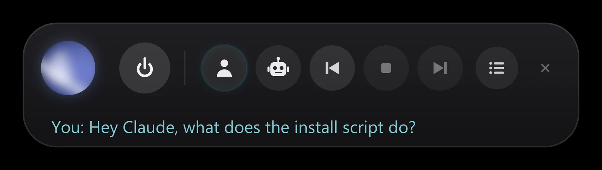
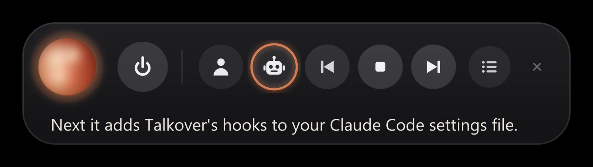
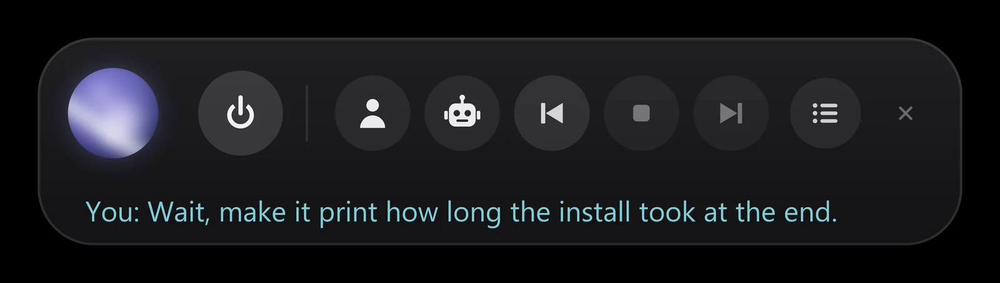
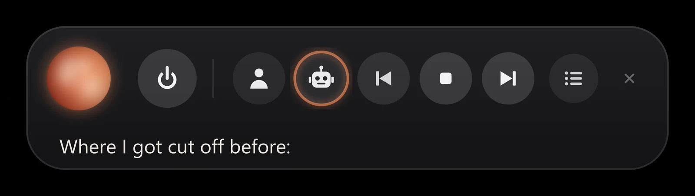

You
It types what you say.
No hotkey and no wake word. Talk whenever you like. Your words land in Claude Code and send when you pause, even while Claude is working or talking.

Talkover keeps your mic open, types what you say into Claude Code, and reads every reply out loud. Cut in whenever you want. It all runs on your computer.
Install
It creates the Python environment, sets up the two speech engines (in Docker, or natively with no Docker on Apple Silicon), downloads the models, adds Talkover to your Claude Code settings (with a backup), and checks that everything answers.
Windows
git clone https://github.com/VyasSathya/talkover
cd talkover
powershell -ExecutionPolicy Bypass -File .\install.ps1 # -Gpu for NVIDIA
powershell -ExecutionPolicy Bypass -File .\start.ps1macOS and Linux Beta
git clone https://github.com/VyasSathya/talkover
cd talkover
./install.sh
./start.sh # then run claude inside tmuxHow it feels
No hotkey and no wake word. Talk whenever you like. Your words land in Claude Code and send when you pause, even while Claude is working or talking.

Every reply is read out loud as it arrives, including what Claude writes before each step, so you hear what it is doing while it does it.

Start talking and the voice pauses. Say "stop" or "wait" and it ends. Say "next", "back" or "again" to move between replies.

When you talk over a reply, Claude is told exactly where it was cut off, so it carries on from there instead of starting over.

Compared
The built-in /voice turns speech into a prompt while you hold a key. Talkover adds the other half: an open mic, spoken replies, and a voice you can interrupt.
FAQ
No. Whisper (speech to text) and Kokoro (the voice) run on your computer, in Docker or natively, and only listen on 127.0.0.1. Talkover sends your words to Claude Code the same way typing would; nothing else goes anywhere.
Yes, in beta. Run Claude Code inside tmux and Talkover types into that pane; on a Mac without tmux it can paste into Terminal, iTerm2, Ghostty or the Claude app instead. On Apple Silicon the speech engines run natively, with no Docker. macOS and Linux pass the automated tests; a Mac stays marked beta until it has been checked on real hardware with a microphone and speakers.
Yes. Spoken replies come from Claude Code hooks, which run for every session. On macOS and Linux your words go into the CLI through tmux. On Windows the mic types into the Claude desktop app's Code tab.
Nothing. It is MIT licensed, and the speech engines run locally, so there are no API keys or usage fees. You need your own Claude Code plan, as usual.
Python 3.11 or newer and a microphone. On Windows: the Claude desktop app and Docker Desktop (about 8 GB of images the first time). On a Mac: tmux, and on Apple Silicon nothing else (about 800 MB of models, no Docker). On Linux: tmux, PortAudio, and Docker or the native engines. A headset works best; with speakers, Talkover removes its own voice from what the mic hears.
No. Talkover is an independent open-source project and is not affiliated with or endorsed by Anthropic. Claude and Claude Code are trademarks of Anthropic.